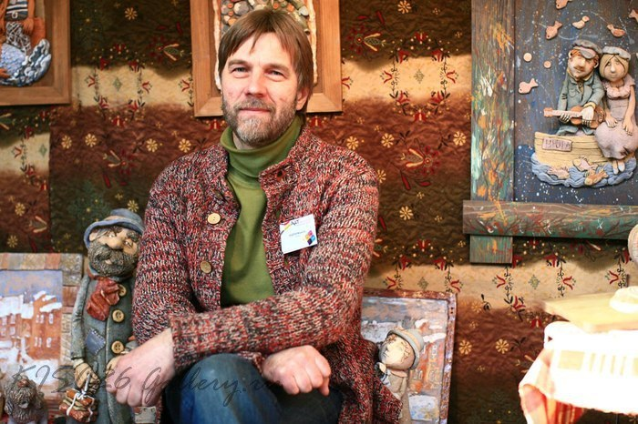

Андрей Небин
Художник керамист
| Образование |
| Ленинградское Высшее художественно-промышленного училище им. В.И. Мухиной |
| Опыт |
| Работал художником на керамическом предприятии в г. Лодейное поле Ленинградской области. В НИИ художественной промышленности - возглавлял лабораторию художественной керамики.Занимался дизайном интерьеров и монументальной живописью.Исполняю обязанности доцента кафедры монументально-декоративного искусства Новосибирской государственной архитектурно-художественной академии.Осуществляю руководство керамической мастерской. |
| Достижения |
| Художник декоративно-прикладного искусства, член Союза художников России с 2001 г., Заслуженный деятель культуры и искусства Новосибирской области. Профессиональные награды: Золотая медаль Сибирской ярмарки выставки «Учсиб-2004», Диплом ОО «НСХР» и значком «Золотая палитра» за активную творческую деятельность и лучшее произведение 2008 г Диплом Всероссийской художественной выставки «Россия-X» (2018), Диплом НРО ВТОО «СХР» за участие в республиканских художественных выставках (2019). Произведения находятся в Белгородский государственный художественный музей, НГХМ, НГКМ, Искитимском историко-художественном музее, в коллекции «Новосибирсквнешторгбанка», в коллекции Новосибирской областной налоговой инспекции, а также в частных собраниях в Германии, Франции, Швейцарии, США, Южной Кореи. |